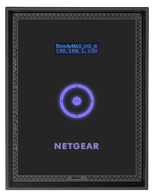

Un Network Attached Storage (NAS) é un dispositivo collegato ad una rete di computer la cui funzione é quella di
condividere tra gli utenti della rete una memoria di massa, in pratica costituita da uno o piú dischi rigidi.

Vantaggi
I vantaggi offerti dai NAS sono molteplici. Innanzitutto un NAS permette di centralizzare l'immagazzinamento dei dati
in un solo dispositivo accessibile a tutti i nodi della rete, altamente specializzato per le prestazioni; quindi un
NAS permette di implementare schemi RAID (Redundant Array of Independent Disks), i quali garantiscono una migliore
gestione della sicurezza dei dati. Normalmente un NAS consente l'eventuale rimozione ed aggiunta di dischi "a caldo"
(hot swap), senza la necessitá di disattivare l'unitá. Nell'ambito dell'adozione di tale architettura un eventuale
svantaggio potrebbe essere costituito dall'enorme quantitá di dati che viene a transitare sulla rete, come potrebbe
essere costituito dai limiti di prestazione e di stabilitá di un NFS e degli altri filesystem utilizzabili in rete.